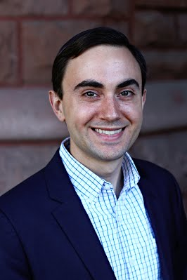

Jeremy W. Skrzypek

I recently received my Ph.D. in philosophy from Saint Louis University. Prior to coming to Saint Louis, I received my Master's degree in philosophy at the University of Saskatchewan and my Bachelor's degree in the same at the State University of New York at Buffalo. In the fall, I will be joining the University of Mary as an Assistant Professor of Philosophy.
The main areas of my research are contemporary and medieval metaphysics, and I also have some significant interest in the philosophy of religion, ancient philosophy, early modern philosophy, and ethics.
I wrote my dissertation on hylomorphism, and, in particular, on medieval and contemporary Neo-Aristotelian conceptions of substantial form. Therein I offer a critique of various "structural" conceptions of substantial form in favor of a more "dynamic" view, which I argue can be found in the work of Thomas Aquinas.
My Curriculum Vitae can be found here, and my contact information can be found under the "Contact" tab above.